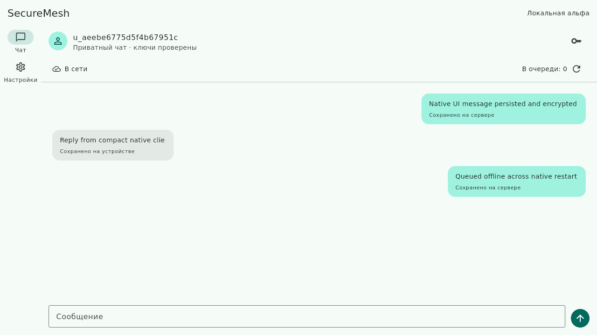
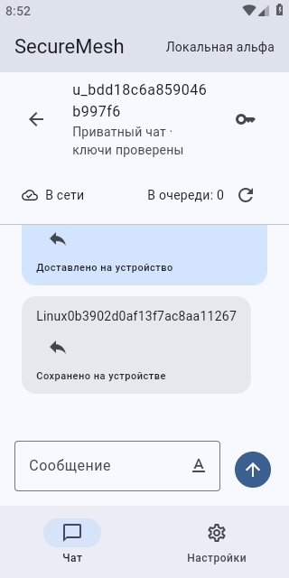

Связь в слабой сети
Устойчивая очередь, повторные попытки, компактный Protobuf и резервный HTTPS-транспорт.
Методика и результаты →Приватные сообщения со сквозным шифрованием. Ключи и история остаются на вашем устройстве, а очередь переживает потерю соединения.
Экспериментальный продукт. Независимый аудит и полная приёмка ещё не завершены.
Иллюстрация принципа работы, не измерение и не скриншот.
Устойчивая очередь, повторные попытки, компактный Protobuf и резервный HTTPS-транспорт.
Методика и результаты →Личные сообщения шифруются OpenMLS до отправки. Проверяйте ключ собеседника независимо от сервера.
Модель угроз →SQLCipher хранит ключи, историю и очередь. Без исходного профиля восстановление старых сообщений не гарантировано.
Профили и архивы →P95 в трёх прогонах кандидата на Linux: 20 кбит/с, RTT 1,5 с, потери 3%.
Уникальных сообщений в шести GPRS и severe-прогонах кандидата 4b0f0bb.
Исторический отдельный тест V2: восстановление 1 000 событий после полного обрыва WSS и HTTPS.
В интеграционном кандидате разрабатывается привычная модель общения. Это не список функций опубликованной IPA.
Ответы, черновики, поиск, папки, архив, избранное и локальное закрепление.
Зашифрованные вложения до 4 МиБ, возобновляемые передачи.
Голосовые и видеосообщения; экспериментальный WebRTC. Реальные устройства требуют приёмки.
Публичные и по приглашению. Сервер читает содержимое каналов; это не E2EE-чаты.
Снимки экрана тестовых сборок.



Лабораторный APK. Регистрация проверена на Xiaomi, обмен — на эмуляторе и Linux.
Собираемые нативные кандидаты. Полная приёмка и распространение ещё впереди.
Unsigned arm64 IPA для разработчиков. Требует подписи Apple.
Отдельный лабораторный PWA для личных текстовых диалогов. См. статус браузерной версии.
Адрес сервера, аккаунт, проверка ключа, отправка и восстановление очереди.
Открыть руководствоЧто видно оператору, как устроена аутентификация и какие гарантии ещё требуют проверки.
Читать модель угрозFlutter, Rust, MLS, SQLCipher, .NET, PostgreSQL и контракты доставки.
Изучить устройствоE2EE защищает личный контент от обычного чтения серверной базы при корректных клиентах и проверенных ключах. Метаданные остаются видимыми, а заражённое устройство или вредоносное обновление меняет модель угроз.